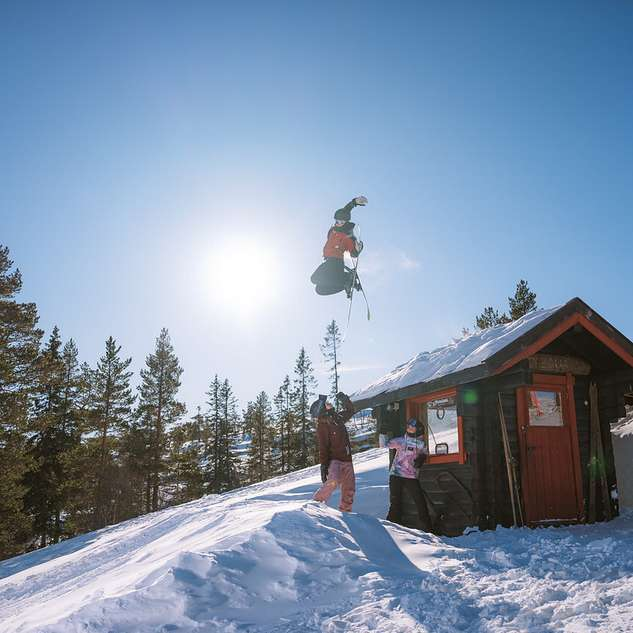
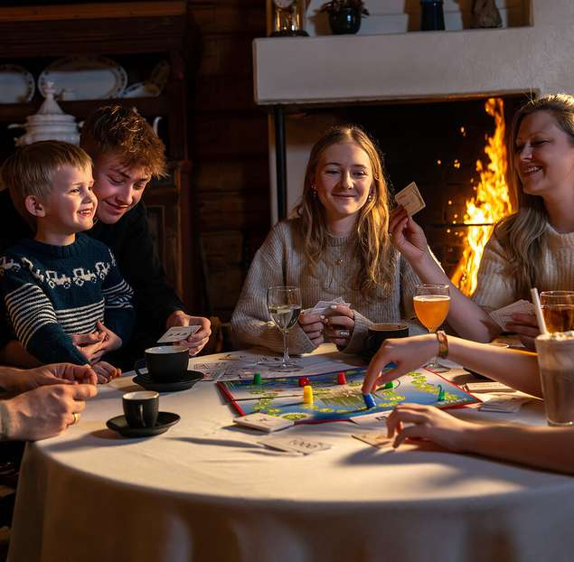
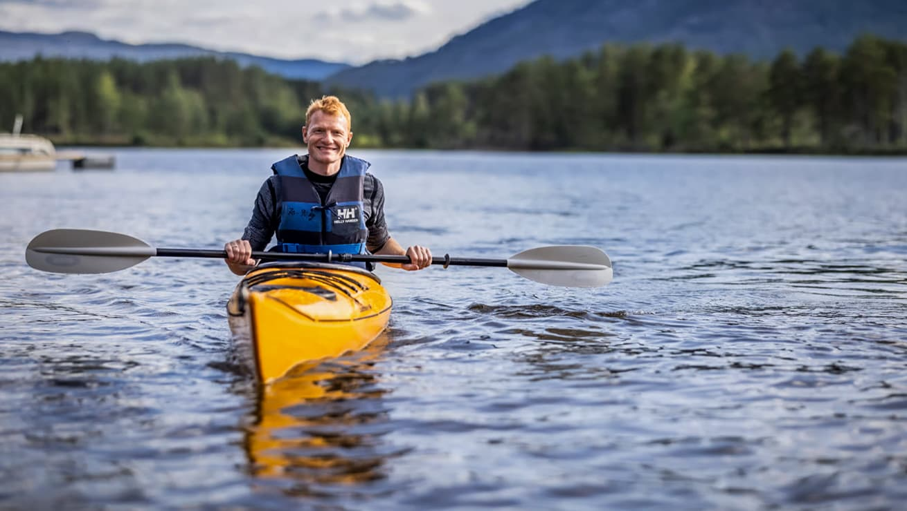
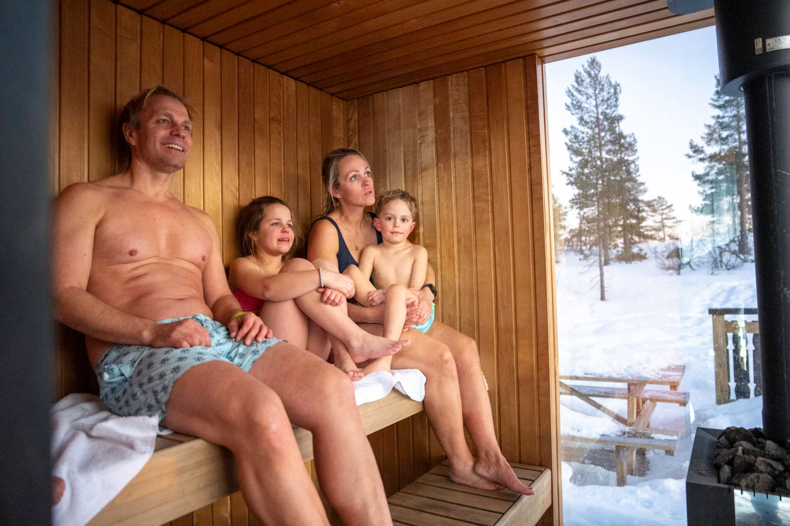
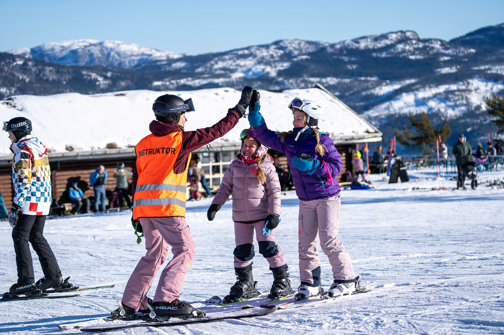
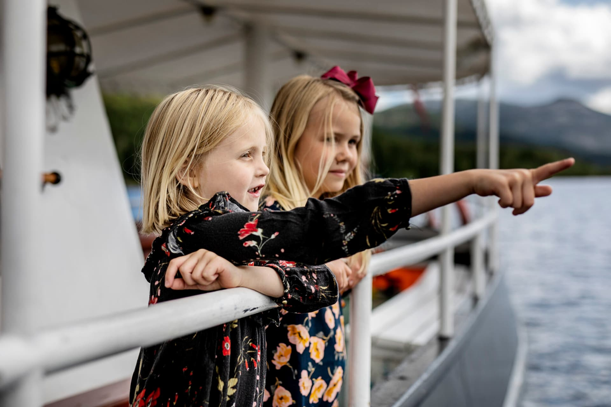
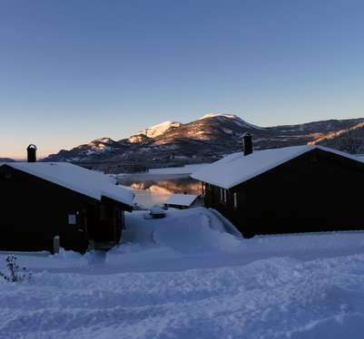
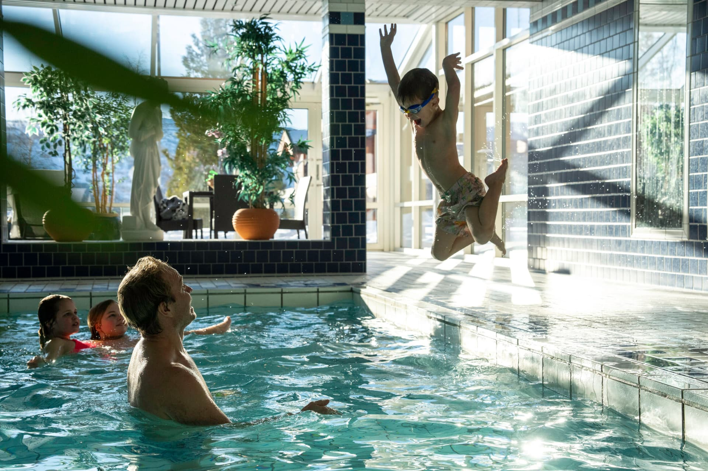
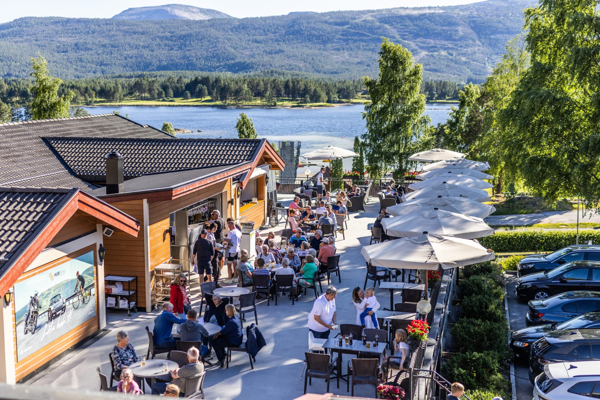

Hotell
Straand Hotel
Historisk hotell ved Nisser siden 1864, med 125 rom og suiter, restaurant, basseng og badstue.
Les merSnø som knirker under støvlene, brede bakker og stille skogsløyper – og en varm peis som venter når dagen er over. Velkommen til Vrådal, et steinkast fra skisportens vugge. Blomstrende frukttrær, de første padleturene og golfbanen som åpner over vannet. Opplev Telemark når naturen våkner til liv. Bad i klart innsjøvann, padle langs stille strender og gå toppturer med utsikt over hele Vest-Telemark. Her har sommergjester blitt ønsket velkommen i fem generasjoner. Skarp luft, fjell i fargeskifte og kvelder rundt bålet. Hent krefter i Vrådal – og ha hele Vest-Telemark rett utenfor døra.
Vrådal er en liten, idyllisk bygd i Vest-Telemark, omkranset av fjell, dype skoger og den klare innsjøen Nisser. Her handler ferien om følelsen av å være til stede.
Du bor tett på naturen, med kort vei til alpinbakkene og skiløypene om vinteren, og til badestrender, golfbane og stier resten av året. Enten du kommer for en aktiv uke med familien eller en stille helg for to, møtes du av ekte norsk gjestfrihet, god lokal mat og en ro som får skuldrene til å senke seg.
Bli bedre kjent med Vrådal









Tvers over innsjøen fra sentrum ligger Vrådal Panorama – et moderne skisenter med røtter i tradisjon. De brede, oversiktlige bakkene gir god plass til nybegynnere og barnefamilier, mens mer erfarne skiløpere finner fart og utfordring i de øvre traseene.

Når snøen slipper taket i fjellet, gjør golfbanen seg klar og de første motorsyklene finner veien til Vrådal. Mai og juni byr på treff, sykkelhelger og lange, lyse kvelder ved vannet.

Nisser er en av Telemarks største innsjøer, og om sommeren er vannet sentrum for livet i Vrådal. Bad fra brygga, lei kajakk eller SUP, eller bli med veteranbåten MS Fram fra 1909 på slusecruise.
Høsten er en av de vakreste årstidene i Vrådal. Gå merkede turer i skog og fjell, sykle langs vei og i terreng, og avslutt dagen med et forfriskende bad – ute i innsjøen eller inne i bassenget.
Fra tradisjonsrikt hotell ved vannet til egen hytte i skogkanten. Her finner du et sted å bo som passer akkurat deg.
Historisk hotell ved Nisser siden 1864, med 125 rom og suiter, restaurant, basseng og badstue.
Les mer
Moderne leiligheter med god plass og selvhushold – perfekt for familier og større grupper.
Les mer
Sjarmerende hytter i solrike omgivelser, fullt utstyrt for familier og vennegjenger.
Les merKaffe fra bålkjelen i skogen, fondue i peisestua og viltgryte i et gammelt stabbur. Her er noen av opplevelsene som gjør en tur til Vrådal til noe du husker lenge. Når du heller vil senke skuldrene: afternoon tea i Blåsalongen, et bad i bassenget og solnedgang fra takterrassen. Sol på takterrassen, lunsj i eplehagen og drinker i strandbaren mens sola går ned over Nisser. Utebad og badstue, afternoon tea i peisestua og lange middager med smaken av Telemark.

Trugetur i fjellsiden og rykende varm kaffe kokt på bålet – på den tradisjonelle måten.
Les mer
Samle familien eller vennegjengen rundt en varm og sosial fondue etter en dag i snøen.
Les mer
Viltgryte i et historisk stabbur innredet som fangsthytte – «Norges minste vertshus».
Les mer




Seks helger med julemat, dinnershow, stand-up og konsert i historiske lokaler.
Fakkeltog, julemiddag, besøk av nissen og fyrverkeri over Vrådal sentrum.
Kveldstur på truger med fortellinger om stjernehimmelen. Fra uke 3 til påske.
Den tradisjonsrike starten på MC-sesongen i Vestfold og Telemark.
Kjøretrening på asfalt og grus for nye og erfarne motorsyklister.
Sykkelhelg med utstillere, prøvesykling og guidede turer.
Få inspirasjon, gode tilbud og nyheter fra Vrådal rett i innboksen. Vi sender bare det som er verdt å lese.